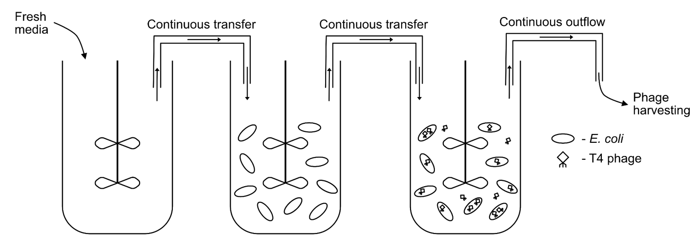
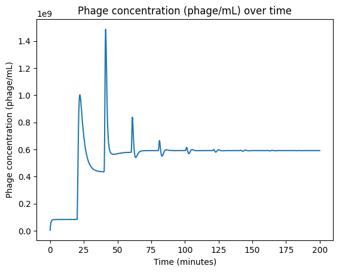
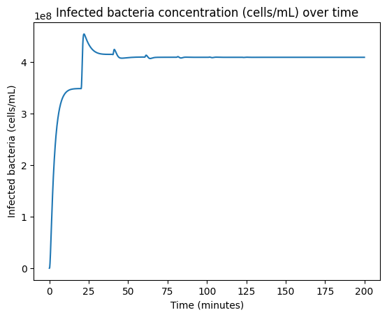
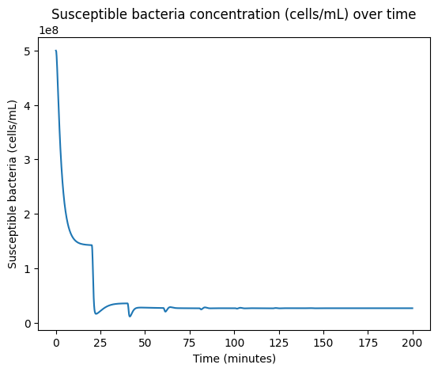
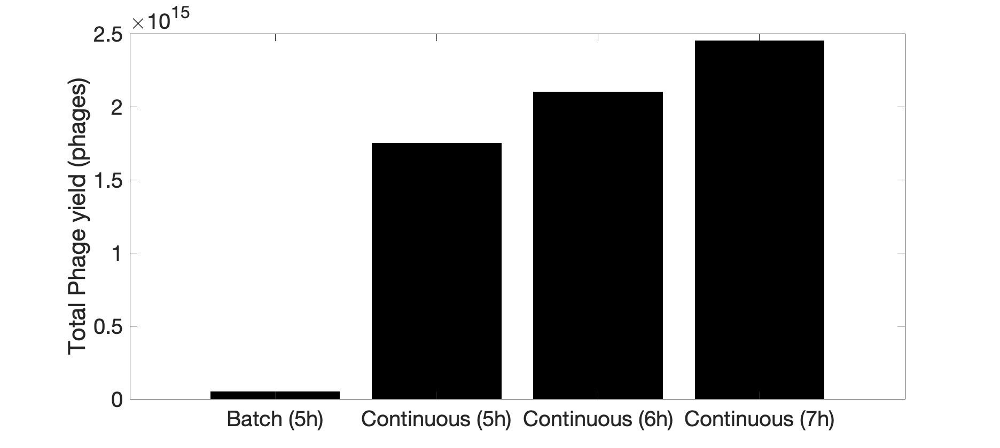
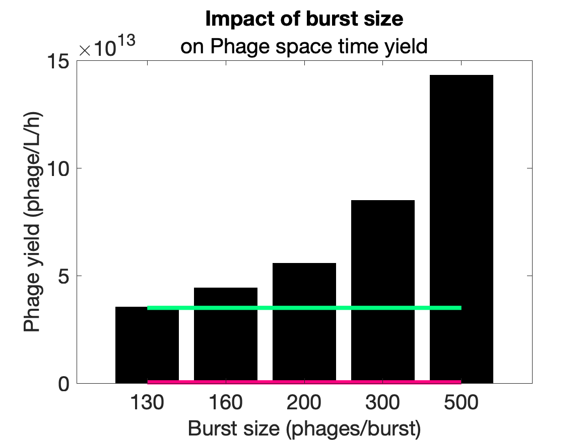
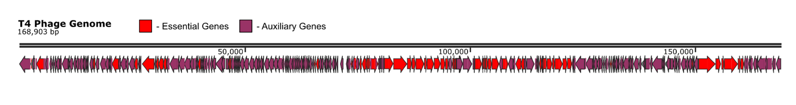

Modeling a Two-Stage Cellstat for Phage Production
The Case for Continuous Culture
As a promising option for improving phage production, we can consider a two-stage cellstat. The setup consists of two vessels: a bacterial growth vessel and a production vessel. The growth vessel serves as a continuous supply of susceptible cells to the production vessel, which contains the phage (Figure 1).
A two-stage system has several advantages:
- Bacteria adaptation and resistance to phage infection can be minimized due to short exposure of cells to phage and the constant supply of fresh cells to the reactor.
- The phage population does not regulate density and availability of susceptible cells, allowing high levels of phage at steady state.
The hypothesis here is straightforward: this should lead to higher space-time yields, because it eliminates the relatively lengthy batch bacteria growth stage.

Figure 1: Schematic illustrating continuous culture cultivation of T4 phages.
The Model
For this analysis, we used a model proposed by Bull et al. The equations representing the production vessel describe the dynamics of three populations: uninfected (susceptible) bacteria, free phage, and infected bacteria. Key assumptions include:
- The density of uninfected cells going into the production vessel is achievable at steady-state conditions in the growth vessel.
- Neither susceptible nor infected cells replicate in the production vessel.
- Infected cells release all progeny after the assumed lysis time.
- There are no phage-resistant bacteria present in the entire process.
- There are no oscillations between phage active and inactive state.
- All phages are strictly lytic.
- Phages do not degrade.
The kinetic parameters used for this analysis:
| Parameter | Value | Description |
|---|---|---|
| \(b_c\) | 5 × 10⁸ cells/mL | Constant bacteria concentration |
| \(w\) | 0.1 mL/min | Washout rate |
| \(\beta\) | 130 phages/cell | Burst size |
| \(\gamma\) | 3 × 10⁻⁹ mL/min·phage | Adsorption rate constant |
| \(\tau\) | 20 min | Latent time |
This was modeled in Python using delay differential equations (DDEs) over a time period of 200 minutes. The system of equations tracks uninfected bacteria (\(U\)), free phage (\(P\)), and infected bacteria (\(I\)):
The subscript \(t - \tau\) denotes the delayed variables, accounting for the latent period before infected cells lyse and release phage.
Results
Figure 2 shows the free phage, susceptible bacteria, and infected bacteria concentrations over time.



Figure 2: Supernatant phage, infected bacteria, and susceptible bacteria concentrations obtained using delay differential equations (DDEs).
As expected, the system is initially dynamic before reaching steady-state conditions. To confirm the model was simulated correctly, steady-state concentrations were calculated from the derived steady-state expressions (derivatives set to zero). The values were in agreement with those obtained at the end of the simulation (200 minutes).
The steady-state supernatant phage titer was determined to be 5.9 × 10⁸ phages/mL.
If we assume a 10 L production vessel (approximately half the volume of currently-reported batch sizes, as continuous reactors often have smaller equipment footprints) with a washout rate of 0.1 fraction vessel volume per minute, the supernatant leaving the production vessel is 1 L/min. This results in a supernatant space-time yield of 5.9 × 10¹¹ phages/L/min or 3.5 × 10¹³ phages/L/hr. This is two orders of magnitude higher than the current batch process space-time yield.
A significant advantage of using a two-stage continuous process is harvest time control. In a batch process, the whole process terminates after 5 hours at which point the free phage concentration has reached steady state. With a continuous culture, the process termination is determined by the operator and can be optimized to minimize cost and maximize yield. This advantage is best captured when looking at total phage yield for both processes (Figure 3).

Figure 3: Total phages harvested from a 5-hour batch reactor (25L) process vs. the production vessel of a two-stage continuous culture (10L) at various times immediately after reaching steady state.
The Enrichment Paradox
On a side note, it was interesting to see the oscillatory behavior of phage at earlier times in the simulation. This behavior is in agreement with what is known as "The enrichment paradox", which was first described in ecological models and later extended to microbial populations. It states that a continuous high supply of prey (here, bacteria) temporarily destabilizes the predator population (here, phage) before it reaches steady state. This behavior has also been reported in other lytic phage modeling. Because the supply of bacteria is high, the phage concentration varies but remains high throughout the process.
Strain Engineering to Increase Yields
The phage burst size, the number of active phage particles released during host cell lysis, is a key parameter dictating the production rate. Engineering either the T4 phage or the host E. coli strain to increase the burst size should increase the space-time yield. We modeled the production rate across a range of burst sizes and observed that, indeed, burst size increases the phage space-time yield (Figure 4).

Figure 4: Impact of burst size improvement on phage yield. Green line marks continuous process yield without tuning burst size. Red line marks batch process yield.
To increase the burst size, one approach is to identify the rate-limiting step in T4 phage assembly by iteratively expressing T4 phage genes in the host E. coli. For example, the formation of the T4 phage capsid depends on the formation of a prohead precursor, which is initiated by the binding of gp20 to the E. coli inner membrane. The capsid itself is composed of four major proteins (gp23, gp24, Soc, Hoc) and requires host proteins YidC and DnaK to assemble. The availability of one of these proteins may be the rate-limiting step. Independently overexpressing these proteins may allow identification of the bottleneck.
A possible orthogonal approach is to remove nonessential genes from the T4 phage genome. Of the 289 genes encoded within the T4 phage genome, only 62 have been designated as essential for phage particle production (Figure 5). Many of the nonessential genes encode auxiliary metabolic genes and have been experimentally knocked out without detriment. Removing them may result in the capsid packaging multiple copies of its genome into a single particle, enabling larger burst sizes since each adsorption event would inject multiple genome copies into the host cell.

Figure 5: The T4 phage genome. Essential genes (determined through knockout experiments) are colored red. Auxiliary (nonessential) genes are colored purple.
Accomplishing this would not be trivial, especially as the T4 phage genome is heavily modified with cytosine hydroxymethylation and glucosylation, conferring resistance to most endonucleases. However, many of the essential genes are clustered in operons (Figure 5), which may make PCR combined with fragment assembly methods a viable option. Additionally, the T4 phage particle has been produced in a cell-free setting, which suggests a reduced genome could be similarly "re-booted" with cell-free synthesis before large-scale production.
Our simulations across a range of burst sizes suggest that increasing burst size in reasonable increments does result in relatively fruitful gains in phage production (Figure 4).